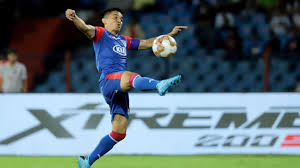

The following was published by CQ Researcher on May 8, 2020, and written by Dr. Gerard A. Gioia, Chief of Neuropsychology at Children’s National Hospital in Washington, D.C. USA Football was granted permission.Read More!!
No matter where you are in the world, we allow you to stay up to date with all the latest goals from around the world. Have you seen the latest great goal?Read More!!
The All India Football Federation (AIFF) has chosen Guwahati and Kolkata as the venues to host Indian football team's first two home games of the 2022 FIFA World Cup and 2023 AFC Asian Cup qualifiers.Read More!!
On this Patron-only episode of the Managing Madrid Podcast, Kiyan Sobhani and Matt Wiltse discuss Achraf Hakimi’s performance vs Bayern Munich: his defense; duel vs Alphonso Davies; his offense; his crossing and so much more.Read More!!